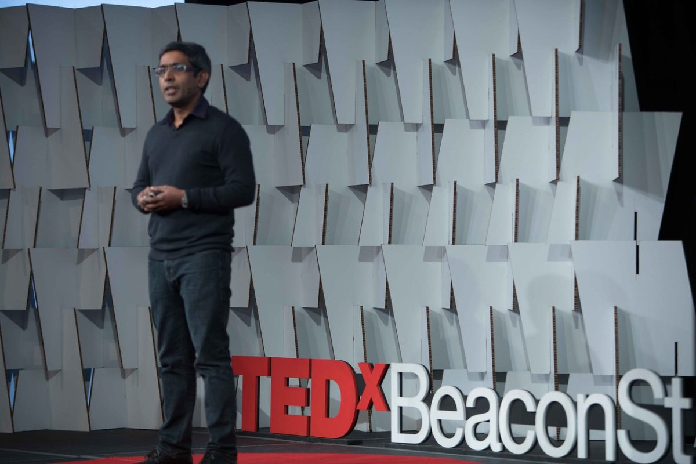

Dr. Satchin Panda
The professor at The Salk Institute, California, and author of the book ”The Circadian Code”

Satchin Panda’s biography
- 1971 - Born and raised in India
- 1991 - Earned his bachelor’s degree in agriculture, specializing in genetics and plant breeding, from Orissa University of Agriculture and Technology
- 1994 - Pursued a master’s program in biotechnology at Tamilnadu Agricultural University and successfully graduated. Panda then decided to move to the United States and joined the graduate program at The Scripps Research Institute where he studied the circadian oscillator mechanism in plants under Dr. Steve Kay.
- 2011 - Received his PhD and conducted postdoctoral research in Dr. John Hogenesch’s lab at the Genomics Institute of the Novartis Research Foundation in San Diego. Here, he tried to understand the light input pathway along with circadian regulation of behavior and physiology in mammals by using genetic and genomic approaches. His work revealed tissue-specific circadian regulation of transcription and suggested that mammals engage multiple photoreceptors to adapt to their natural environment.
Awards
- 2003 - Finalist for Science-Eppendorf Prize in Neurobiology.
- 2006 - Dana Foundation award in brain and immune system imaging
- 2006 - Pew Scholar in Biomedical Research
- 2006 - Whitehall Foundation Junior faculty award
- 2014 - The Julie Martin Mid-Career Award in Aging Research
“lots of light during the day, no light at night, less noise, relatively cooler temperatures at night, and earlier dinner. Each of these factors has been shown to contribute to better sleep.”
Satching Panda